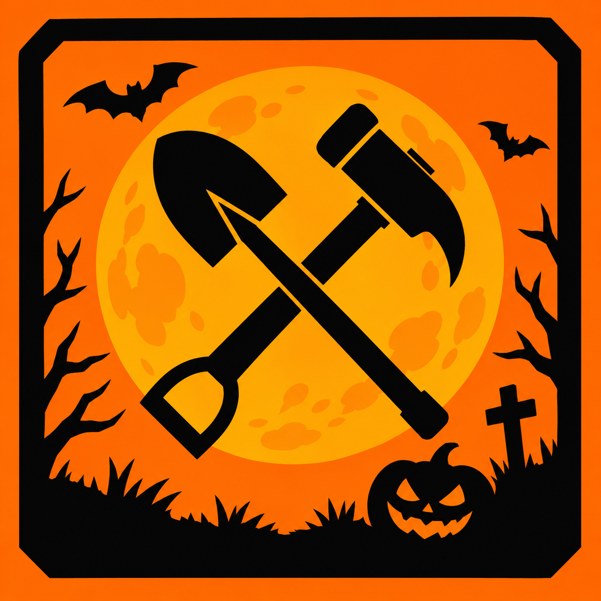

Проходная · нужен вход
Доступ ограничен
Чтобы открыть сайт, войдите через Discord. Нужно быть участником сервера ИСР с нужной ролью.
Что нужно для входа
- Войти через аккаунт Discord
- Состоять на сервере ИСР
- Иметь роль, дающую доступ на сайт

Чтобы открыть сайт, войдите через Discord. Нужно быть участником сервера ИСР с нужной ролью.